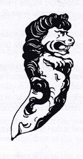
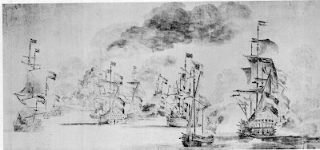
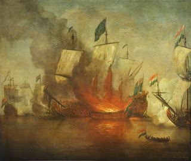
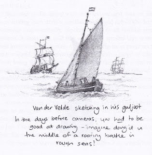
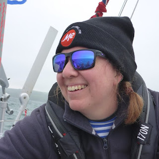
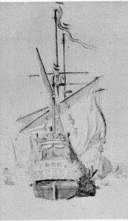

{kind=link}
But please, before you throw this blatant puffery aside, let me explain a little more. The section I was reading, when I gave myself away, was the first of 'The Sole Bay Lectures' by MW Vandervelde. These come as an appendix to the adventure story and are not fiction, though I had, for a moment, forgotten that MW Vandervelde was a made-up character. The history he writes, however, is true – or as as true as diligent research could make it. I had simply forgotten, at that moment, who had actually undertaken the research.
Checking the acknowledgements I was relieved to discover that MW Vandervelde (or me) had been reading the primary source accounts by Sir John Narborough who was a key combatant, at the Battle of Sole Bay May 28th 1672. Narborough was second captain of HMS Prince, the first of three ships that day to be used as flagship by James, Duke of York, the King's brother and Lord High Admiral. It was Narborough, for instance, who described the sea on the morning of the battle as ‘smooth as a bowl of milk…the fairest day we have seen all this summer before’. He was ashore, havin gthe Prince careened, when the Dutch warships arrived off Southwold. The Lord High Admiral was sleeping off a good dinner in the town.
For MW Vandervelde (and me) this lack of wind adds to the horror of the battle as the great ships spent so much of the long day drifting with the tide, battering each other, with no manoeuvrability, no means of evasion or withdrawal, particularly once they’d sustained any degree of damage. It also meant that the smoke from the action of the cannon, or from the enemy-inflicted fires, hung over the vessels like an acrid shroud. People watching from the Suffolk shore could hear the guns but could not see. It was only later that day and during the following weeks that the scale of the carnage was evident in the number of bodies washed up along the shore.
 |
| Van der Velde's sketch of himself, in his galjoot, drawing a battle |
{kind=link}
MW Vandervelde, a researcher so obsessive that he’s prepared to deliver his lectures to his wife’s collection of garden gnomes, feels he has a special connection to the Battle. He knows, in honesty, that he is not descended from the great Dutch artist, Willem Van der Velde the elder, who was there in his ‘galjoot’, a small sailing vessel, light enough to be able to maintain steerage way even in the near-calm conditions. Van der Velde, the first-ever war artist, tacked between the fighting ships, sketching as he went. On his return to shore, he would pass the best of his sketches to his older son, also Willem, who would work them up into magnificent oil paintings and sell them to rich patrons.
 |
| The Burning of the Royal James at the Battle of Sole Bay by Willem Van der Velde the Younger, after his father sketches |
{kind=link}
MW Vandervelde’s feeling of connection to the c17th Van der Veldes is not based on ancestry but on attitude. In the story he tries to explain; ‘I’ve always felt I understood old Van der Velde. All he did, all his life, was draw boats. Hundreds and hundreds and hundreds of boats – all sizes. He must have been an obsessive. So when he couldn’t draw boats at home any more, he moved to a country where he could. He drew boats for King Charles, boats for King James and when Dutch Willem came over and was crowned King William III he drew boats for him as well.’
 |
| Claudia Myatt's response to Van der Velde's achievement |
{kind=link}
You may find it hard to believe that I’d intended this blog to be about neuro-diversity at sea... Let me try to explain.
On Wednesday I attended (by zoom) a Cruising Association talk by Kass Schmidt, the sailor who aims to be the first American woman to complete the OSTAR (Original Single-Handed Trans-Atlantic Race). As this event, from Plymouth to Newport Rhode Island, has been running since 1960 I was startled that this was a ‘first’ still to be achieved. I listened to Kass’s talk with interest, something in me wondering about her slightly flat style of delivery and extreme matter-of-factness about quite major events, a dismasting for instance. In the second half of the talk, she offered a ‘big reveal’. She began to talk about her Autism and ADHD diagnosis, made when she was in her early 50s after a lifetime of feeling indefinably odd and out of step with ‘normal’ people.
 |
| Kass Schmitt, OSTAR competitor |
{kind=link}
‘Who are you calling normal anyway?’ is my regular knee jerk reaction - which I mention only to get it out of the way. There is now no doubt of the existence of neuro-diversity – different set-ups in the brain – which is not the same as the difference between individual people. My lightbulb moment of understanding came when some one explained this to me as the difference between PC and Mac computers. Both good but made differently, their systems not interchangeable. Kass spoke of the years of her life spent masking aspects of herself which didn't seem to fit the way 'normal' people experienced the world, and the consequent build-up of internal strain as the years passed. She was 50 before she decided to seek a diagnosis but this has proved liberating. She doesn’t experience her diagnoses of autism and ADHD as pejorative labels, but as helpful shorthand descriptions and explanations of her characteristic approach to experience.
Kass has an attractive American inflection in her speech which makes the word ‘autistic’ sound like‘artistic’. In the second half of her talk she explained that, sinced her diagnosis, she no longer felt it was odd that she should prefer being alone in the North Atlantic in gale-force conditions to standing in the pleasant club room of the Cruising Association talking to a few dozen interested well-wishers. She has come to accept that the way she is constitutes her strength, not her weakness. “I now believe that I have been successful in solo ocean racing BECAUSE of my autism and ADHD, not despite it, and I’m keen to use my experience to challenge stereotypes of autistic people and be a much-needed role model for autistic women and girls.” She spoke about a charity, Autism on the Water, that was new to me, and also mentioned the support of the Magenta Project, an organisation dedicated to increasing equity and inclusion in sailing, beginning with gender.
I feel strongly supportive of these attempts to address such issues and had intended to use my blog time to write something more about diverse-abilities. But then I picked up The Lion of Sole Bay…
{kind=link}
There was a reason. All the books in the Strong Winds series include people who are 'different'. I had just intended to check up on my character ‘Angel’, named Angela by her parents but known to her schoolmates as ‘Ants’ or ‘Antsie’. She has been diagnosed with ADHD bit this is not proved as helpful to her as to Kass. She's only 12 and is so hyperactive in class that unkind fellow-pupils have picked up on the saying ‘ants in your pants’ and she has regularly had to endure the humiliation of being set-upon the playground and having her knickers pulled down to check for insects. She suffers, and fights, and wishes that her parents could have bought her school trousers instead of a skirt.
Her parents - Michael and Nellie Vandervelde - are not unkind or insensitive, but exhausted - as parents of neuro-diverse children often are. They are so used to her being expelled from school after school that, once they discovered their mistake over the latest school’s uniform policy, they can't feel it's worth buying yet another item of clothing as her stay is likely only to be short.
Unlike Kass, Angel hasn't yet found the strengths of her condition. She can't concentrate well enough to read, for instance. She looks at her parents in disbelief as she explains: Her dad went to work in a records office where he did nothing all day except read and sort out papers into files. Her mum had been an assistant librarian before she had to give up work to care for Angel. She didn’t see how them two top-grade readers had produced her. They probably didn’t see it either. Something had gone badly wrong.
Many parents of children diagnosed as living with some form of neurological difference, come to realise that these are characteristics that they share. Others don't notice. There’s no evidence in the book that MW Vandervelde has any insight into his own character but he’s quick to spot the evidence of obsession in the c17th artist with whom he shares his surname – ‘All he did, all his life, was draw boats…’
It may be that readers of The Lion of Sole Bay will look at Angel's parents and see characteristics in them, which might suggest that they too are neuro-divergent. It’s not just Michael’s obsession with c17th history, there’s also her mother’s stone animal collection: The whole front garden seethed with ornaments. There were hump-backed weasels and snuffling hedgehogs. Birds poised to fly and cats to pounce. Except that they didn’t seethe. They were stone and pottery so they all held still. We know very little about Nellie Vandervelde, Angel's mother. Her collection may be a compensation for the exhausting life she leads with her hyperactive daughter or she too may have obsessions of her own.
Obsessives are invaluable to the rest of us as they add to our sum of knowledge, ferret out truths or extend our range of achievement, simply by their single-minded dedication. I’ve no doubt Kass Schmitt will achieve this, whether or not she finally achieves the ‘first’ she is chasing across the Atlantic. MW Vandervelde’s Sole Bay lectures may have only be heard in empty village halls but I particularly appreciated his persistence in following the story of the Stavoren, the 4th grade ship in which the artist sailed to the Battle of the Sound in 1658.
 |
| The Stavoren, 1658 |
{kind=link}
The Stavoren was the only English capture from the Dutch at the 1672 Battle of Sole Bay. Her career was not glorious (if we think that building beautiful wooden ships to fire cannonballs at each other deserves that adjective) but knowing about her adds an unexpected frisson to my journey every time I drive from Woodbridge to Waldringfield, in Suffolk, and see her figurehead on the Red Lion pub at Martlesham.
This was just one of MW Vandervelde's revelations as he researched the disastrous year 1672 for his series of lectures. As I’ve belatedly realised that the 350 anniversary of the Battle of Sole Bay passed this summer, I think I’ll find a way to make his lectures available on line, as well as at the end of the book. They still seem rather good to me – as I announced to Francis this morning. I was genuinely surprised to be reminded of the time I’d spent in the National Maritime Museum and the Suffolk Public Record office only ten years ago when some avatar using my name was writing this distinctly peculiar story. I almost begin to wonder who, exactly, is the odd one here...
The Lion of Sole Bay is the 4th in the Strong Winds series and was published in 2013. It's certainly not historical as I'd set myself the challenge of writing a Hallowe'en story. You can discover more on the website www.golden-duck.co.uk - where I WILL post those lectures. And if you read the book I hope you'll be glad to discover that Angel finds an element where she no longer feels 'Antsie'.
Here are links if you'd like to know more about Autism on the Water, the Magenta Project or Kass Schmitt